컴퓨터응용가공산업기사 (2004-08-08 기출문제)
1과목: 기계가공법 및 안전관리
1. 항온열처리의 종류로 틀린 것은?
- 마르템퍼링(martempering)
- 오스템퍼링(austempering)
- 마르퀜칭(marquenching)
- 오스퀜칭(ausquenching)
(정답률: 49%)

2. 주물사의 시험에 속하지 않는 것은?
- 통기도 시험
- 내화도 시험
- 점착력 시험
- 피로 시험
(정답률: 49%)
3. 드릴링 머신 작업에서 접시머리 볼트의 머리부분이 묻히도록 원뿔(추)자리 파기를 하는 작업은?
- 리밍(reaming)
- 카운터 보링(counterboring)
- 스폿 페이싱(spotfacing)
- 카운터 싱킹(countersinking)
(정답률: 56%)
4. 케이스 하드닝(case hardening)에 관하여 옳은 정의는?
- 가스 침탄법을 말한다.
- 고체 침탄법을 말한다.
- 액체 침탄법을 말한다.
- 침탄후의 열처리를 말한다.
(정답률: 59%)
5. 호닝머신에서 내면가공시 일감에 대해 혼(hone)은 어떤 운동을 하는가?
- 회전운동
- 회전 및 직선 왕복운동
- 캠운동
- 직선 왕복운동
(정답률: 65%)
6. 블록게이지와 마이크로미터를 조합한 측정기로서 μm단위의 높이를 설정하거나 또는 비교측정에서의 기준 게이지로 사용하는 측정기는?
- 공기마이크로미터
- 하이트 마이크로미터
- 사인바
- 나사 마이크로미터
(정답률: 58%)
7. 인발작업에서 인발력을 결정하는 인자가 아닌 것은?
- 다이(die) 마찰
- 단면감소율
- 압력각
- 재료의 유동성
(정답률: 31%)
8. 센터리스 연삭기에서 조정 숫돌차의 바깥 지름이 500 mm, 회전수가 40 rpm, 경사각이 4° 일 때, 봉재의 이송속도는?
- 4.4 m/min
- 6.27 m/min
- 10.82 m/min
- 8.8 m/min
(정답률: 17%)
9. 업셋(up set)작업에 대하여 올바르게 설명한 것은?
- 단면적을 크게 하여 길이를 줄인다.
- 단면적을 작게 하여 길이를 늘인다.
- 단면적을 크게 하여 길이를 늘인다.
- 단면적을 작게 하여 길이를 줄인다.
(정답률: 40%)
10. 두께 4mm, 0.1% C 의 연강에 지름 10mm 의 구멍을 펀칭가공할 때, 펀칭력은? (단, 판의 전단저항은 25 kgf/mm2으로 한다.)
- 약 3142 ㎏f
- 약 2500 ㎏f
- 약 6283 ㎏f
- 약 2743 ㎏f
(정답률: 25%)
11. 수평 밀링머신에서 커터는 다음 중 어느 것에 끼워지는가?
- 오버암
- 아버
- 컬럼
- 니이
(정답률: 48%)
12. 단조 완료 온도가 적정 온도 보다 높으면 어떤 현상이 나타나는가?
- 단조 시간이 길어진다.
- 결정입이 조대하여 진다.
- 결정입이 미세하여 진다.
- 내부 응력이 발생한다.
(정답률: 45%)
13. 큐펄러(Cupola) 용량의 기준은?
- 1회 용출되는 최대량
- 큐펄러의 내부용적
- 매 시간당 용해량
- 1회에 장입 할 수 있는 최대량
(정답률: 30%)
14. 불활성 가스 아크 용접(inert gas arc welding)에 대한 설명으로 틀린 것은?
- 전자세 용접이 용이하고 고능률적이다.
- 청정작용이 있다.
- 피복제 및 용제가 필요하다.
- 아크가 극히 안정되고 스패터가 적다.
(정답률: 42%)
15. 기계가공을 한 후 표면의 조도를 표면거칠기 측정기로 측정하려고 한다. 표면거칠기의 측정방법에 해당되지 않는 것은?
- 광 절단식 표면거칠기 측정기
- 광파 간섭식 표면거칠기 측정기
- 삼침식 표면거칠기 측정기
- 촉침식 표면거칠기 비교측정기
(정답률: 48%)
16. 평면도 측정과 가장 관계가 적은 측정기는?
- 옵티컬 플랫(optical flat)
- 오토-콜리메이터(auto-collimator)
- 베벨 프로트랙터(bevel protractor)
- 수준기(level)
(정답률: 42%)
17. 회전하는 롤러 사이로 소재를 통하게 하여 판재나 형재로 성형하는 가공법은?
- 전조
- 압출
- 압연
- 단조
(정답률: 48%)
18. 아베의 원리(Abbe's principle)에 대해 설명한 것은?
- 측정기의 측정면 모양은 피측정물의 외형이 곡면에는 평면, 안지름에는 구면이나 곡면을 사용한다.
- 피측정물과 표준자와는 측정방향에 있어서 일직선위에 배치하여야 한다.
- 측정시 눈의 위치를 언제나 눈금판에 대하여 수직이 되도록 한다.
- 측정자의 마모를 적게하기 위하여 내마모성이 큰 재료를 선택한다.
(정답률: 59%)
19. 테르밋 용접(thermit welding)법을 설명한 것 중 가장 알맞는 것은?
- 원자수소의 반응열을 이용한 용접법이다.
- 전기용접과 가스용접법을 결합한 방법이다.
- 산화철과 알루미늄의 반응열을 이용한 용접법이다.
- 액체산소를 이용한 가스용접법의 일종이다.
(정답률: 63%)
20. 금속을 소성 가공할 때 열간가공과 냉간가공을 구별하려면 아래의 어떤 온도를 기준으로 하는가?
- 담금질 온도
- 변태 온도
- 재결정 온도
- 단조 온도
(정답률: 72%)
2과목: 기계설계 및 기계재료
21. 미끄럼을 방지하기 위하여 접촉면에 치형을 붙여, 맞물림에 의하여 전동하도록 조합한 벨트는?
- 가죽벨트
- 고무벨트
- 강 벨 트
- 타이밍벨트
(정답률: 67%)
22. Fe-C 상태도에서 공정점의 자유도(degree of freedom)는 얼마인가?
- 0
- 1
- 2
- 3
(정답률: 47%)
23. 롤러 체인에서 스프로킷의 잇수 60, 체인의 피치 1 cm, 스프로킷의 회전수 100 rpm 일 때, 체인의 평균속도는?
- 8 m/s
- 16 m/s
- 5 m/s
- 1 m/s
(정답률: 15%)
24. 용접이음이 리벳 이음보다 우수한 점으로 해당되지 않는 것은?
- 이음 효율이 높다.
- 중량의 경감과 재료 절감이 가능하다.
- 대형가공기계가 필요하지 않고, 공작이 용이하다.
- 변형이 되지 않고, 잔류응력이 생기지 않는다.
(정답률: 52%)
25. 알루미늄(Al)합금의 특징 설명으로 틀린 것은?
- 가볍고 전연성이 좋아 성형 가공이 용이하다.
- 우수한 전기 및 열의 양도체이다.
- 용융점이 1083℃로 고온가공성이 높다.
- 대기 중에서는 일반적으로 내식성이 양호하다.
(정답률: 59%)
26. 코터이음에서 2000 ㎏f 의 인장력이 작용한다. 이 때 코터의 폭이 90 mm, 두께가 60 mm 인 경우 코터가 받는 전단응력은 얼마인가?
- 0.185 ㎏f/cm2
- 18.5 ㎏f/cm2
- 29.5 ㎏f/cm2
- 37.0 ㎏f/cm2
(정답률: 30%)
27. 밴드 브레이크의 긴장측 장력 814㎏f, 두께 2 mm, 허용응력 8㎏f/mm2일 때 밴드의 폭은? (단, 이음 효율은 100 % 로 한다.)
- 약 40 mm
- 약 51 mm
- 약 60 mm
- 약 71 mm
(정답률: 45%)
28. 구형 피벗(pivot)이 있고, 이것을 지점으로 해서 경사 할수 있으므로 플랜지와 패드의 표면에 쐐기형 유막이 생기며, 일명 킹스베리 베어링 이라고도 부르는 베어링은?
- 자동조절베어링
- 미첼베어링
- 구면베어링
- 칼러베어링
(정답률: 20%)
29. 무단변속 마찰차가 아닌 것은?
- 원뿔 마찰차
- 구면 마찰차
- 원판 마찰차
- 홈붙이 마찰차
(정답률: 52%)
30. 철-콘스탄탄 열전대에 대한 설명 중 잘못된 것은?
- ＋측 재료는 순철이다
- －측 재료는 니켈 90％, 크롬 10%이다
- 사용온도는 약 600℃ 정도이다
- 측정온도 범위에 따라 보정이 필요하다
(정답률: 28%)
31. 일반적으로 침탄에 사용되는 탄소강의 탄소함량의 범위로 가장 적합한 것은?
- 0.1 ∼ 0.2 %
- 0.5 ∼ 0.7 %
- 0.8 ∼ 0.9 %
- 1.2 ∼ 1.5 %
(정답률: 19%)
32. 고속도강(high speed steel)의 기본 성분에 속하지 않는 원소는?
- Ni
- Cr
- W
- V
(정답률: 57%)
33. 칠드주철에서 칠(Chill)층의 깊이를 지배하는 요소가 아닌 것은?
- 주입온도
- 주물두께
- 금형온도
- 금형의 경도
(정답률: 47%)
34. 모듈 m = 5, 중심거리 C = 225 mm, 속도비가 1 : 2 인 한쌍의 스퍼 기어의 잇수는 각각 몇 개인가?
- 35, 70
- 40, 80
- 25, 50
- 30, 60
(정답률: 21%)
35. 다음 중 기계구조용 탄소강은?
- SM20C
- SPC3
- SPN5
- GC20
(정답률: 77%)
36. 고 Cr강에서 가장 주의해야할 취성은?
- 800℃취성
- 650℃취성
- 475℃취성
- 25℃취성
(정답률: 22%)
37. 반복 하중을 가하여 재료의 강도를 평가하는 시험 방법은 다음 중 어느 것인가?
- 충격시험
- 인장시험
- 굽힘시험
- 피로시험
(정답률: 52%)
38. 스프링의 탄성변형에 의해 저장되는 에너지 U 를 계산하는 식으로 잘못된 것은? (단, T = 비틀림모멘트, θ = 비틀림각(rad), k = 스프링상수, δ= 스프링변형량(mm), P = 하중(kgf))
- U = (1/2) Pδ
- U = (1/2) K δ2
- U =(1/2) Pδ2
- U = (1/2) Tθ
(정답률: 30%)
39. 열간가공이 쉽고 다듬질 표면이 아름답고, 특히 용접성이 좋고 고온강도가 큰 장점이 있는 합금강은?
- Ni-Cr강
- Mn-Mo강
- Cr-Mo강
- W-Cr강
(정답률: 36%)
40. 그림과 같은 T형 용접이음에서 허용전단응력이 8 ㎏f/mm2일 때, 용접길이 L 은 얼마 정도인가?
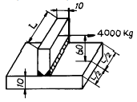
- L = 50 mm
- L = 60 mm
- L = 180 mm
- L = 190 mm
(정답률: 13%)
3과목: 컴퓨터응용가공
41. 아래에서 디지털 목업(digital mock-up)에 관한 설명으로 거리가 먼 것은?
- 실물 mock-up의 사용빈도를 줄일 수 있는 대안이다.
- 간섭검사, 기구학적 검사 그리고 조립체 속을 걸어다니는 듯한 효과 등을 낼 수 있다.
- 적어도 surface나 solid model로 각각의 단품이 모델링되어야 한다.
- 조립체 모델링에는 아직 적용되지 않는다.
(정답률: 50%)
42. 나사의 종류를 나타내는 것 중 옳은 것은?
- TW-관용평행나사
- SM-전구나사
- UNF-유니파이 가는나사
- PT-유니파이 보통나사
(정답률: 67%)
43. 재료기호 SM10C에서 10C는 무엇을 나타내는가?
- 재질번호
- 재질등급
- 최저 인장강도
- 탄소 함유량
(정답률: 67%)
44. 제작공정의 도면에서 제거 가공해서는 안 된다는 것을 지시할 때 사용하는 기호는?
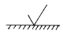
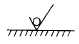
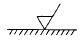
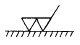
(정답률: 70%)
45. 다음은 베어링을 나타내는 호칭번호이다. 베어링의 종류를 나타내는 것는 어느 것인가?
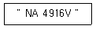
- NA
- 49
- 16
- V
(정답률: 67%)
46. 그림과 같은 삼각뿔을 B-Rep방식으로 솔리드 모델링할 때 성립하는 오일러(Euler)의 관계식으로 옳은 것은? (여기서 V=꼭지점의 수, F=면의 수, E=모서리의 수이다.)
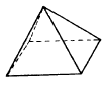
- V + F + E = 2
- V + F - E = 2
- V - F + E = 2
- V - F - E = 2
(정답률: 40%)
47. 다음 끼워맞춤 중 중간 끼워맞춤에 해당하는 것은?
- ø 27H7g6
- ø 27H7k6
- ø 27H6f6
- ø 27H8e8
(정답률: 44%)
48. 보기와 같은 정투상도에 맞는 등각 투상도는?
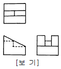
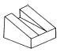
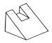
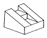
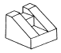
(정답률: 81%)
49. 점(3, 8)에 대한 점 (7, 5)의 상대좌표와 그 거리가 맞게짝지어진 것은?
- 상대좌표 (4, -3), 거리 5
- 상대좌표 (4, 3), 거리 6
- 상대좌표 (-4, 3), 거리 5
- 상대좌표 (-4, -3), 거리 6
(정답률: 45%)
50. 다음 도면의 제도방법에 관한 설명 중 옳은 것은?
- 도면에는 어떠한 경우에도 단위를 표시할 수 없다.
- 척도를 기입할 때 A:B로 표기하며, A는 물체의 실제크기, B는 도면에 그려지는 크기를 표시한다.
- 축척, 배척으로 제도 하였을지라도 도면의 치수는 실제치수를 기입한다.
- 각도 값 표시는 항상 라디안 값으로 표시해야 한다.
(정답률: 47%)
51. 다음 설명 중 틀린 것은?
- 프로그램 카운터(program counter) : 컴퓨터에 의하여 다음에 실행될 명령어의 주소가 저장되어 있는 기억 장소
- 명령어 레지스터(instruction register) : CPU에 의하여 다음에 실행될 명령어가 저장되어 있는 레지스터
- 상태 레지스터(status register) : CPU에서 수행되는 연산에 관련된 여러가지 상태 정보를 기억하기 위하여 사용되는 레지스터
- 누산기(accumulator) : 특별한 용도의 레지스터로 산술논리연산장치(ALU)에 의해서 얻어진 결과를 영구히 보관하는 곳
(정답률: 44%)
52. DXF파일의 섹션의 종류가 아닌 것은?
- 헤더 섹션
- 블록 섹션
- 엔티티 섹션
- 디렉토리 섹션
(정답률: 41%)
53. 2차원에서 주어진 물체를 y = x 의 식을 갖는 직선에 대하여 반사변환(reflection)을 수행하는데 적용되는 변환행렬 [Tref]는?
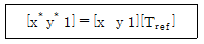
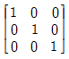
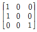
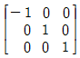
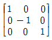
(정답률: 27%)
54. 코일 스프링의 종류와 모양만을 도시할 때, 재료의 중심선만을 나타내는 선은?
- 가는 실선
- 굵은 실선
- 가는 1점 쇄선
- 굵은 1점 쇄선
(정답률: 19%)
55. 다음 보기의 정면도에 해당하는 것은?
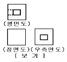
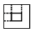
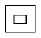
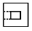
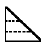
(정답률: 46%)
56. CAD/CAM 시스템에서 사용하는 좌표계가 아닌 것은?
- 직교 좌표계
- 원통 좌표계
- 원추 좌표계
- 구면 좌표계
(정답률: 53%)
57. 다음 중 원뿔에 의한 원추곡선이 아닌 것은?
- 일차 스플라인 곡선
- 쌍곡선
- 포물선
- 타원
(정답률: 53%)
58. 그림과 같이 x2+y2-4=0인 원이 있다. 점 P(2,2)에서의 접선 및 법선 방정식은?
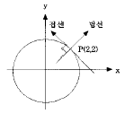
- 접선방정식: 4(x-2)+4(y-2)=0, 법선방정식: 4(x-2)-4(y-2)=0
- 접선방정식: 4(x-2)-4(y-2)=0, 법선방정식: 4(x-2)+4(y-2)=0
- 접선방정식: 2(x-1)+2(y-1)=0, 법선방정식: 2(x-1)-2(y-1)=0
- 접선방정식: 2(x-1)-2(y-1)=0, 법선방정식: 2(x-1)+2(y-1)=0
(정답률: 13%)
59. 다음 중 여러선이 같은 장소에서 겹치게 될 경우 가장 우선하는 선은?
- 절단선
- 숨은선
- 외형선
- 중심선
(정답률: 65%)
60. 제한된 일정 지역 내에 분산 설치된 각종 정보 장비들 사이의 통신을 수행하기 위하여 최적화하고 신뢰성있는 고속의 통신 채널을 제공하는 것은?
- 부가가치 통신망(VAN)
- 협대역 종합 정보 통신망(ISDN)
- 근거리 통신망(LAN)
- 광대역 종합 정보 통신망(ATM)
(정답률: 64%)
4과목: 기계제도 및 CNC공작법
61. CNC 와이어컷 가공 중 2차가공(second cut)의 목적이 아닌 것은?
- 다이 형상에서 돌기부분을 제거하기 위해
- 정삭여유를 남기고 가공하기 위해
- 피가공물의 내부응력 개방후의 형상을 수정하기 위해
- 코너부위의 형상에러를 수정하기 위해
(정답률: 45%)
62. 공간 분할 표현법(spatial enumeration)이 다른 솔리드 모델링 방법에 비하여 우수한 점은?
- 공간 유일성(spatial uniqueness)을 보장
- 저장 공간(storage space)의 절약
- 생성에 필요한 계산량 감소
- 모델의 정확성
(정답률: 47%)
63. 다음 CNC선반 프로그램에 대한 설명으로 옳은 것은?(오류 신고가 접수된 문제입니다. 반드시 정답과 해설을 확인하시기 바랍니다.)
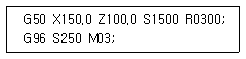
- 최고회전수 1500 rpm으로 지정, 절삭속도 200 m/min로 주축 정회전
- 최고회전수 200 rpm으로 지정, 절삭속도 1500 m/min로 주축 역회전
- 최고회전수 1500 rpm으로 지정, 절삭속도 200 m/min로 주축 역회전
- 최고회전수 200 rpm으로 지정, 절삭속도 1500 m/min로 주축 정회전
(정답률: 68%)
64. 그림에서 현재의 공구위치가 점 P1이며, P2를 거쳐 P3까지 원호가공을 하려한다. 가장 알맞은 프로그램은?
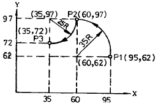
- N100 G90 G17 G02 X60. Y97. I-35. JO F300 ; N101 G03 X35. Y97. I-25. JO ;
- N100 G90 G17 G03 X60. Y97. I0. J-35. F300 ; N101 G02 X35. Y97. I-25. JO ;
- N100 G90 G17 G02 X60. Y97. I-35. JO F300 ; N101 G03 X35. Y72. I-25. JO ;
- N100 G90 G17 G03 X60. Y97. I-35. JO F300 ; N101 G02 X35. Y72. I-25. JO;
(정답률: 51%)
65. 머시닝센터에서 200rpm으로 회전하는 스핀들에 피치 1.5mm 나사를 가공할 때 주축 이송속도는 몇 mm/min 인가?
- 150
- 200
- 250
- 300
(정답률: 40%)
66. NURBS(Non Uniform Rational B-Spline)곡선을 일반적으로 B-Spline과 비교한 장점을 설명한 것중 틀린 것은?
- B-Spline은 각각의 조정점에서 3개의 자유도를 갖고 NURBS에서는 4개의 자유도를 갖는다.
- 곡선의 자유도는 변형이 가능하다.
- 포물선 원추곡선 등을 더 정확하게 표현할수 있다.
- 자유곡선, 원추곡선 등의 프로그램 개발시 작업량이 늘어난다.
(정답률: 43%)
67. B-Spline 곡선이 Bezier 곡선에 비해서 갖는 장점을 설명한 것으로 옳은 것은?
- 곡선을 국소적으로 변형할 수 있다.
- 한 조정점을 이동하면 모든 곡선의 형상에 영향을 준다.
- 자유곡선을 표현할 수 있다.
- 복잡한 곡선을 표현하려면 많은 조정점을 사용한다.
(정답률: 28%)
68. CNC 선반에서 주축회전수가 100 rpm 일 때 재료가 2회전하는 시간은 몇 초인가?
- 1.2
- 1.0
- 1.4
- 1.6
(정답률: 47%)
69. 스위프(sweep)형 곡면형태 정의방식에 알맞은 곡면모델링 방법은?
- 단면곡선과 plofile에 의한 정의
- point data에 의한 정의
- 상부곡면과 외곽곡면에 의한 정의
- 방정식에 의한 정의
(정답률: 43%)
70. CNC선반에서 절삭속도를 30 m/min 로 일정하게 유지하려고할 때 공작물의 직경이 20 mm 인 경우 주축 회전수는 몇 rpm 인가?
- 477.5
- 485.5
- 495.5
- 5⑤.5
(정답률: 39%)
71. 일반적으로 머시닝센터에서 사용하지 않는 공구는?
- 절단바이트
- 볼엔드밀
- 센터드릴
- 탭
(정답률: 59%)
72. CNC선반에서 명령값 X = 70 mm로 부품을 가공한 후에 측정한 결과 ø69.93이었다. 기존의 X축 보정값이 0.004 일 경우 수정해야 할 공구 보정값은 전부 얼마인가?
- 0.74
- 0.074
- 0.69
- 0.069
(정답률: 69%)
73. CNC 공작기계의 검출장치중에서 광원, 감광판, 유리판 등을 사용하고 있는 것은?
- 인덕토신(inductosyn)
- 엔코더(encoder)
- 리졸버(resolver)
- 타코미터(tachometer)
(정답률: 47%)
74. 일반적으로 3차원적인 물체의 표현방법이 아닌 것은?
- 평면격자에 의한 표현방법
- 경계표현에 의한 표현방법
- 메시 분할에 의한 표현방법
- 프리미티브(primitive)에 의한 표현방법
(정답률: 43%)
75. CNC 선반 조작시 주의사항에 해당되지 않는 것은?
- 기계조작은 조작순서에 의하여 행한다.
- 급속이송시 공구와 공작물의 충돌에 주의한다.
- 프로그램을 작성할 때는 다른 프로그램을 삭제한다.
- 공구교환시 공구와 공작물의 충돌에 주의한다.
(정답률: 84%)
76. 솔리드 모델(Solid model)의 특징 중 틀린 것은?
- 물리적 성질 등의 계산이 곤란하다.
- Boolean 연산(합, 차, 적)을 통하여 복잡한 형상 표현도 가능하다.
- 테이터의 처리가 많아진다.
- 이동· 회전 등을 통하여 정확한 형상파악을 할 수있다.
(정답률: 56%)
77. 백래시(backlash) 보정 설명으로 가장 알맞은 것은?
- 축의 이동이 한 방향에서 반대 방향으로 이동할 때 발생하는 편차값을 보정하는 기능
- 볼 스크루의 부분적인 마모 현상으로 발생된 피치간의 편차값을 보정하는 기능
- 백 보링 기능의 편차량을 보정하는 기능
- 한 방향 위치결정 기능의 편차량을 보정하는 기능
(정답률: 46%)
78. 머시닝 센타에서 공구길이 보정 무시 코드는?
- G46
- G47
- G48
- G49
(정답률: 57%)
79. CNC 프로그램을 위한 준비기능(G 기능) 가운데 연속지령 코드(modal G code) 만으로 짝지어진 것은?
- G00, G01, G02, G03
- G00, G02, G04, G06
- G01, G03, G04, G39
- G03, G04, G39, G41
(정답률: 79%)
80. FMS(Flexible Manufacturing System)의 정보 네트워크 시스템은 일반적으로 3가지 형태로 구분 되어진다. 다음 중 그 3가지 형태에 속하지 않는 것은?
- 나사(screw)형
- 스타(star)형
- 링(Ring)형
- 버스(Bus)형
(정답률: 33%)